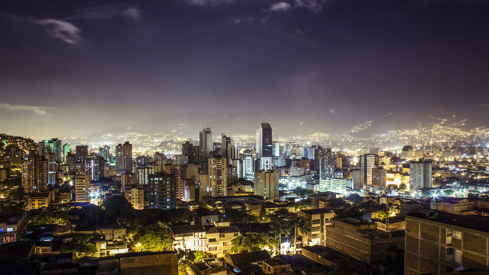
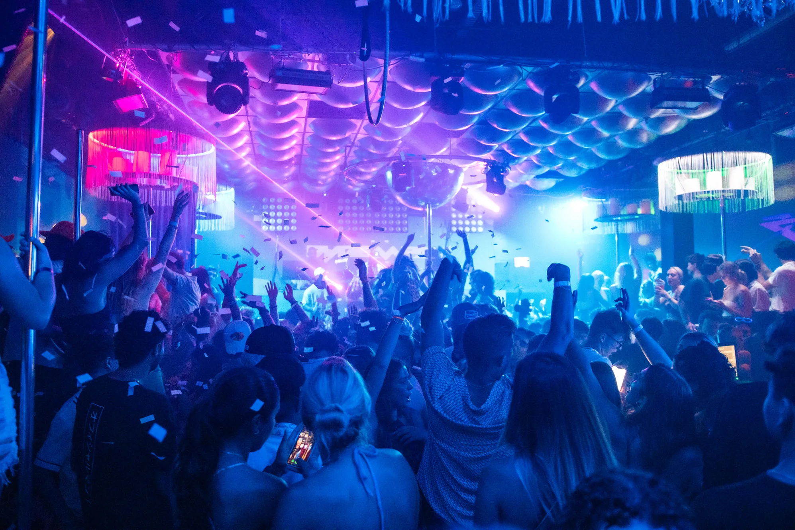

Tu habitación.
Nuestra base.
Alojamiento durante 14 noches y espacios comunes para compartir el viaje.

MEDELLÍN, COLOMBIA 07 — 21 DIC / 2026
Dos semanas. Una casa. Tu grupo.
Y un cumpleaños en el centro de todo.
Lo mejor del viaje empieza cuando ya tienes con quién vivirlo.
Llegas, dejas la maleta y tienes una base: tu habitación, espacios para encontrarse y un grupo con el que compartir la ciudad.
Alexander Voss pone el punto de encuentro y la coordinación. Tú traes las ganas de estar ahí.
Alojamiento durante 14 noches y espacios comunes para compartir el viaje.
Amigos, amigos de amigos y gente afín al universo Voss. Puedes llegar solo.
Propuestas de salidas, recomendaciones y un anfitrión como punto de contacto.
Alojamiento coordinado y organización del grupo. Cada salida se acuerda antes.

IMAGEN DE AMBIENTE · NO REPRESENTA UN LOCAL INCLUIDOUna cena que abre la conversación. Un rooftop para empezar. Música, ciudad y esa sensación de que la noche todavía tiene algo más.
El plan se coordina con el grupo. Entradas, consumos y traslados se pagan aparte; los locales y las salidas se confirman durante la organización.
El cumpleaños de Alexander Voss.
El corazón de estas dos semanas.
Guardamos esta fecha para celebrar juntos. El formato y el lugar se comunicarán al grupo antes de la celebración.
Quiero ser parteLa casa se convierte en el punto de partida.
La ciudad de noche, con el grupo ya armado.
La fecha alrededor de la que gira todo.
Segundo fin de semana y despedida el 21.
Un ritmo compartido, con libertad para hacer tus propios planes. No es un itinerario rígido.
Seis habitaciones. Una para Voss.
Cinco para formar parte.
La ubicación exacta y los detalles se comparten antes de reservar.
La casa es alojamiento y punto de encuentro. Las reuniones y el uso de espacios comunes respetan las normas de la propiedad; no se prometen fiestas dentro de ella.
14 noches · 7 al 21 de diciembre
Precio por persona.
Tarifa especial durante octubre.
Tu espacio privado. Toda la experiencia compartida.
Aprox. US$727
Desde noviembre: US$1,000
Más espacio para hacer de la casa tu lugar.
Inventario total, no disponibilidad en tiempo real. Consulta ocupación admitida y condiciones de tu habitación antes de pagar. Las equivalencias en dólares son referenciales; el importe de octubre está fijado en soles.
Una base social durante dos semanas, alojamiento y coordinación del grupo. La libertad de elegir cómo vivir cada día.
Habitación durante 14 noches, espacios comunes de la casa, integración al grupo privado y coordinación con Alexander Voss para propuestas y recomendaciones.
Vuelos, alimentación, transporte, entradas, consumos, botellas y cualquier actividad con coste. No se garantiza acceso VIP a establecimientos.
Consultas disponibilidad, recibes fotos y condiciones por escrito, confirmas tu habitación y coordinamos tu llegada. No se considera reservada hasta recibir confirmación.
Sí. Parte del formato es llegar a una casa con un grupo al que puedes integrarte desde el primer día. También puedes venir con alguien; consulta la ocupación de cada habitación.
Alojamiento del 7 al 21 de diciembre de 2026 (14 noches), habitación privada según categoría, uso de espacios comunes, integración al grupo y coordinación con el anfitrión. El precio es por persona. Las salidas y sus gastos se pagan aparte.
En Medellín. Te compartimos la ubicación exacta, fotos y características antes de reservar. Las zonas de nightlife mencionadas son propuestas de salida, no una afirmación sobre el barrio de la casa.
Hay 3 habitaciones estándar y 2 premium para la venta. Las premium son de mayor tamaño. Te mostramos fotos, distribución y características de cada una antes de elegir; no se anuncian amenities adicionales sin confirmar.
Es el cumpleaños de Alexander Voss y el momento central del viaje. El lugar, formato y posibles gastos de la celebración se comunicarán antes. No se presupone una fiesta dentro de la casa.
No. Esta experiencia gira alrededor del grupo, Medellín y el cumpleaños. Si alguien quiere organizar un plan de póker, será opcional e independiente.
No. Coordinamos propuestas para salir juntos, pero entradas, reservas de locales, consumos, botellas y transporte se pagan aparte. Siempre puedes decidir si te sumas.
Escríbenos indicando estándar o premium. Confirmamos disponibilidad, ocupación, importe de reserva, saldo y condiciones por escrito antes de cualquier pago.
Consulta por WhatsApp indicando tu país. Te confirmaremos los métodos disponibles, moneda, tipo de cambio aplicable y cualquier comisión antes de pagar.
Los importes de adelanto, fechas de saldo y condiciones de cancelación, devolución o transferencia se entregarán por escrito antes de reservar. No realices un pago sin haberlas recibido y aceptado.
La base es una casa compartida por el anfitrión y el grupo que reserve las cinco habitaciones comercializadas. La convivencia, las visitas y las actividades se sujetan a las reglas de la propiedad. Las salidas a establecimientos no implican exclusividad del local.
Tu habitación. Tu grupo. Tu diciembre.
Quiero ver disponibilidadHabla directamente con Alexander Voss.